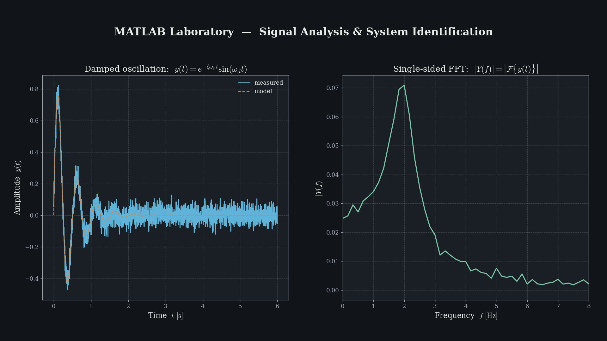

MATLAB Laboratory Course
内容：Static truss、Dynamic Crane、Measurement Data Analysis 和 truss structure optimisation。实验使用 MATLAB 完成结构力学建模、ODE 仿真、FFT 信号分析、符号计算和优化任务。
MATLAB
ODE Solver
FFT
Symbolic Math
Optimization